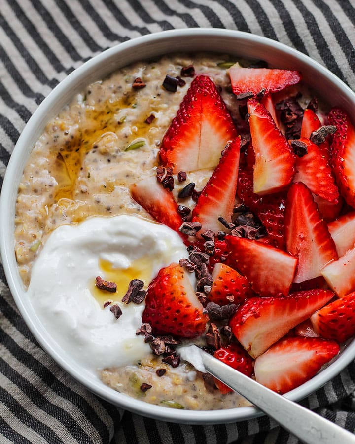

Main Ingredients

Protein Oatmeal
This recipe is cost-efficient and can be prepared overnight as an early morning, delicious meal.
Items you'll need for this recipe are:
- Old Fashioned Oats-$6.29
- Strawberries-$2.99 (Organic-$4.99)
- Bananas-$1.09 per lbs (Organic-$2.99)
- Greek Yogurt (Sugar-free for weight loss, regular for weight gain)-$4.99-$6.99
- Almond Butter-$7.39
- Whey Protein of your choice-Price varies
- Sugar-free Chocolate Chips-$3.98
- Sugar-free Honey-$8.49
Step By Step Process
- Start by filling a pan with water (2-3 cups of water into the pan) and start boiling at medium heat
for 5-7 minutes.
- Once the water begins to steam, add 1-2 full cups of old-fashioned oats to cook slowly and grab the following
ingredients:
- Strawberries
- Bananas
- Almond Butter
- Whey Protein
- Once you've grabbed your tasty ingredients, start adding a tablespoon of almond butter (only if you notice
that the oats are soft and cooked) and mix the butter in to extend the flavor throughout the oats.
- After a good mix (30 seconds-minute), slice half to a full banana along with slices of strawberries
into the mix to really complement the flavors together.
- Once mixed, add your fully-cooked oats onto a bowl and add a scoop or 2 of whey protein into the bowl and mix.
Oats are carbs low in calories, adding in your almond butter + the scoop of protein will add more calories to your oats while simultaneously
reducing the risk of gaining extra body fat.
- Next, add in your greek yogurt and mix. Your oats turn from bland to grand instantly.
- Finally, add your sugar-free chocolate chips and honey and enjoy nearly (600) calories per serving.
Bonus tip: For even sweeter flavor, Chobani's vanilla-flavored greek yogurt adds an incredible taste to your oats.